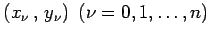

Inhalt Index DeskTop Bronstein

 Numerische Mathematik Approximation, Ausgleichsrechnung, Harmonische Analyse
Numerische Mathematik Approximation, Ausgleichsrechnung, Harmonische Analyse


Die Grundaufgabe der Interpolation besteht darin, durch eine Reihe von Punkten  eine geeignete Kurve hindurchzulegen. Graphisch geschieht das mit Hilfe eines Kurvenlineals, rechnerisch mit Hilfe einer Funktion  , die an den Stellen
, die an den Stellen  , den sogenannten Stützstellen, die gegebenen Werte
, den sogenannten Stützstellen, die gegebenen Werte  als Funktionswerte annimmt, d.h., g(x) erfüllt die Interpolationsbedingung
als Funktionswerte annimmt, d.h., g(x) erfüllt die Interpolationsbedingung
Als Interpolationsfunktionen sind in erster Linie Polynome gebräuchlich bzw. bei periodischen Funktionen sogenannte trigonometrische Polynome. Im letzteren Fall spricht man von trigonometrischer Interpolation. Werden n+1 Stützstellen benutzt, so heißt n die Ordnung der Interpolation, und der Grad des Interpolationspolynoms ist dann höchstens gleich  . Da mit zunehmendem Polynomgrad die Interpolationspolynome starke Oszillationen aufweisen, die in der Regel unerwünscht sind, zerlegt man zweckmäßigerweise das Interpolationsintervall in Teilintervalle und geht zur Spline-Interpolation über.
. Da mit zunehmendem Polynomgrad die Interpolationspolynome starke Oszillationen aufweisen, die in der Regel unerwünscht sind, zerlegt man zweckmäßigerweise das Interpolationsintervall in Teilintervalle und geht zur Spline-Interpolation über.